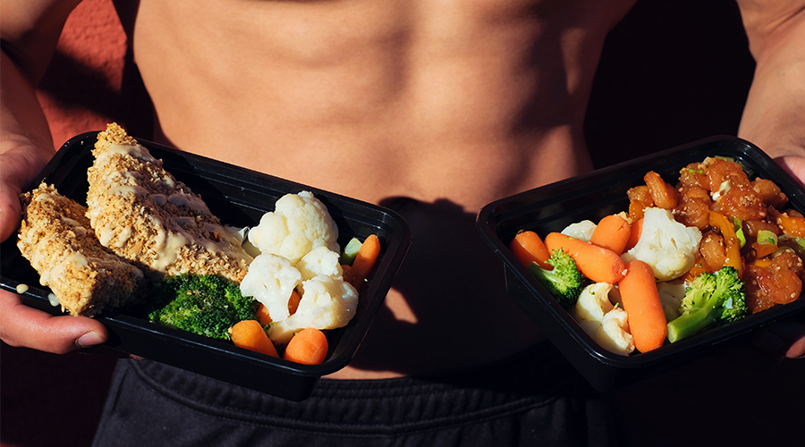

/ Artikler / 5 myter om træning
5 Myter om træning
Spot reducering af fedt, juicekur og meget mere. Her er nogle af de træningsmyter, som bare skal stoppes.
1. Kost skal være kedeligt.
“Kylling, ris og broccoli er den eneste vej til hurtige resultater”. Dette er en sætning du sikkert har hørt før, men dette er langt fra sandheden. En god kostplan er en, hvor du spiser hvad du har lyst til, men bare i de rette mængder. Så længe du også opnår dine makroer, er resten ligegyldigt.
2. Du kan spot-reducerer fedt.
Nej. Bare nej.
3. Juicekur er en effektiv måde at tabe sig på.
Der findes ikke en mirakelkur for at tabe sig, specielt ikke denne såkaldt “juicekur”. Den eneste vej til at tabe sig, er et kalorieunderskud.
4. Mange gentagelser giver mere tonede muskler.
“Hvis du laver få gentagelser bliver du bulky, men hvis du laver mange bliver du markeret”. Endnu en myte, som intet belæg har. Alt mellem 5 og 20 gentagelser giver den samme mulighed for at opbygge muskler.
5. Du skal lave cardio for at tabe dig.
Selvom du forbrænder kalorier når du laver din cardio, så er det minimalt hvor stor en effekt det kan have. Det kan hjælpe dig med dit kalorieunderskud, men det mest afgørende element for dit vægttab, er hvad du laver i køkkenet.